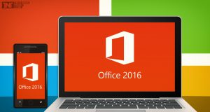

Microsoft Office 2016 Rilis !!
By Awaludin Siking
Beberapa waktu yang lalu, dunia IT digemparkan dengan dirilisnya Windows 10. Tak lama dari itu Microsoft Kembali merilis produk anyarnya yaitu Microsoft Office 2016 pada tanggal 22 September 2015. Microsoft Office Professional Plus 2016 Final Full Version hadir dengan tampilan baru dan beberapa perbaikan dari versi sebelumnya.
Penggunaan memori Microsoft Office 2016 ini tidak terlalu banyak, sehingga tidak akan membuat komputer kamu menjadi lambat. Ditambah dengan tampilan baru yang menggunakan flat design seperti Windows 10, membuat Microsoft Office 2016 ini semakin menyenangkan dan nyaman ketika digunakan.
Di dalam Microsoft Office Professional Plus 2016 Final Full Version ini sudah terdiri dari Microsoft Word, Excel, PowerPoint, Access, Outlook, OneNote, dan Publisher. Beberapa fitur baru juga telah ditambahkan pada Microsoft Office 2016 ini.

Berikut ini adalah beberapa fitur baru dari Microsoft Office 2016 :
Support berbagai macam platform
Kini Microsoft Office tidak hanya dapat digunakan pada satu platform. Dikarenakan kebutuhan akan penggunaan aplikasi yang dapat digunakan di berbagai platform seperti Laptop / PC, Tablet, dan Smartphone, Kini Microsoft Office dapat dipastikan bisa digunakan pada berbagai macam Platform bai Windows, Android bahkan di iOS sekalipun.
Tersinkronisasi Antar Device
Baik itu tema, setting, tampilan, daftar dokumen yang baru saja dikerjakan, dsb akan tersinkronisasi. Yang perlu dilakukan adalah Login dengan akun Microsoft. Setelah itu ketika anda membuat dokumen, maka anda bisa membukanya juga di PC, tablet, smartphone, maupun secara online melalui browser. Tentu saja dengan syarat koneksi internet.
Sharing Pekerjaan
Dokumen yang sudah dibuat bisa kita share dengan orang lain, baik itu melalui email, sharing link, ataupun, social media. Kita bisa menginvite team dan rekan untuk melihat atau mengedit dokumen yang sudah kita buat sehingga bisa dikerjakan dan direvisi secara bersama-sama (kolaborasi). Kita juga bisa membuat link bagi orang lain untuk melihat ataupun mengedit dokumen tersebut. Ini mirip dengan salah satu produk Google yaitu Google Docs.
Pilihan Tema dan Background
Office 2016 dilengkapi dengan 4 macam pilihan tema, yaitu White, Light Gray, Dark Gray, dan Black. Ada 14 pilihan background yang bisa kamu pilih untuk mempercantik tampilan Office 2016.

 Perbedaan Jaringan 3G dan 4G
Perbedaan Jaringan 3G dan 4G
 Jumlah Core dan Hubungannya dengan
Jumlah Core dan Hubungannya dengan Pengertian Subnetting IP Address
Pengertian Subnetting IP Address  Cara Mengatur Layar di Windows Saat
Cara Mengatur Layar di Windows Saat Pengertian dan Cara Defrag/Defragment
Pengertian dan Cara Defrag/Defragment  Macam macam file audio dan
Macam macam file audio dan  Apa itu Extreme Programming ?
Apa itu Extreme Programming ?